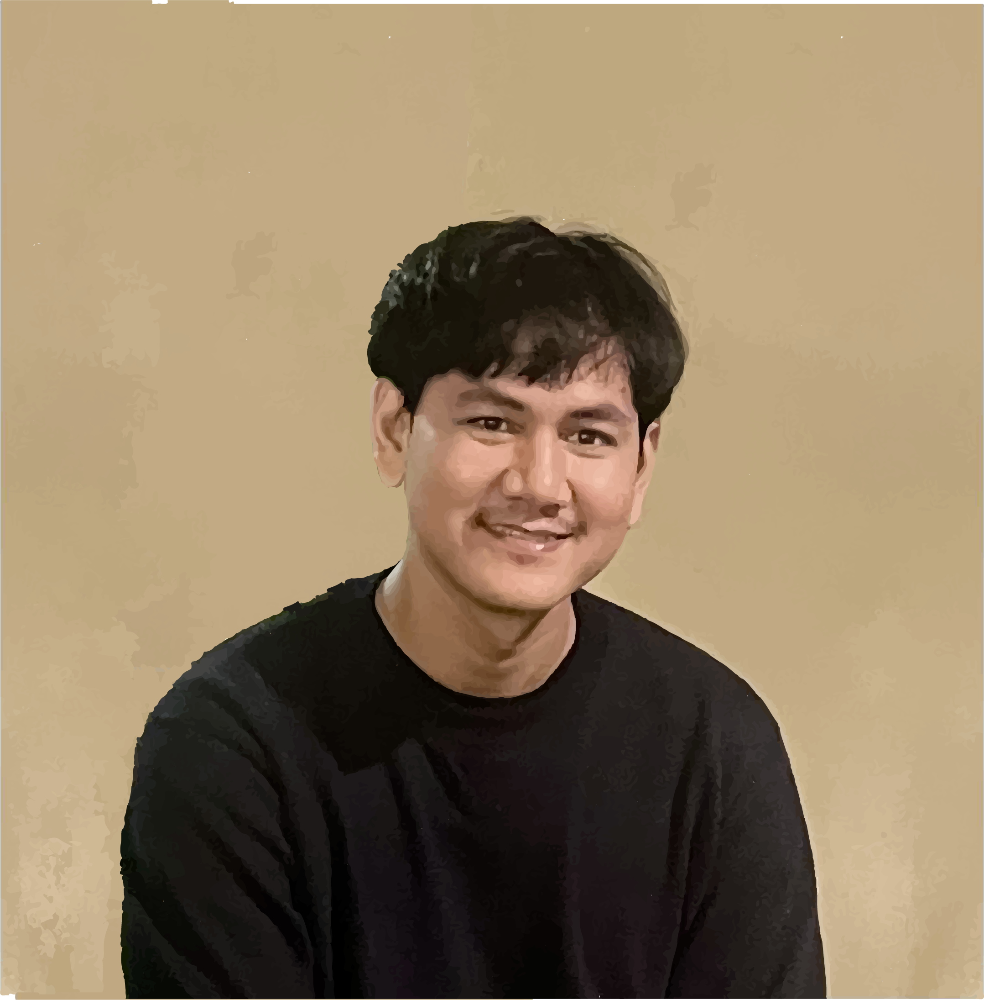
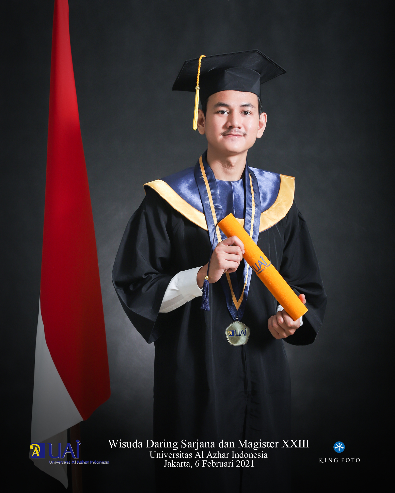

Political Science Degree / Web Development
" I'm an observer who spends my time finding out ways about how to improve things in my surroundings. By emphasizing the value of teamwork, I could get better understanding to then solve and organizing things to get the reliable objective of the company that I worked on. "

I am a person with high curiosity, focused on work that requires high precision in detail and focused even under pressure. I am hardworker, committed and honest. Raised by a religious family, I have a competitive spirit, thankful and polite, I am the 3rd child of 4 siblings, from an early age I was taught about foreign insight by my parents so I was very interested and aspired to have a career abroad, therefore when I graduated from high school I immediately took the International Relations study program in order to open up opportunities for me to achieve my dreams. During my studies, I had a high interest in International Economics courses, therefore I used creative economy of the Industry era 4.0 as my thesis with the title "The Role of the Creative Economy as a tool for Indonesian Public Diplomacy (Through the World Conference on Creative Economy program).
Because Light attracts Bugs!
• 2020 •
Bachelor of Political Science Degree
University of Al Azhar Indonesia
( GPA 2.98 )
- - - - - - - - - - - - - - - - - - - - -
• 2015 •
Social Science
SMA N 74 Jakarta
All rights Reserved.